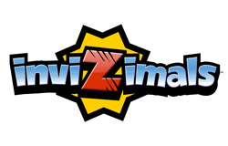
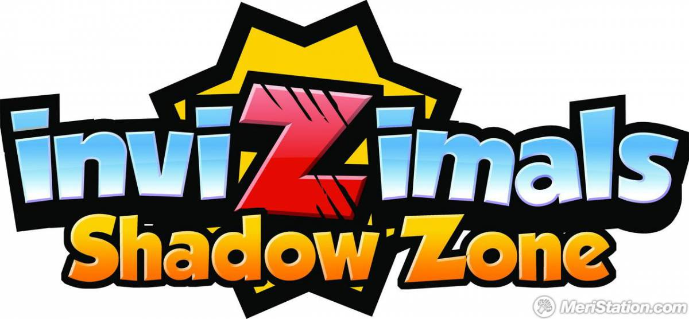
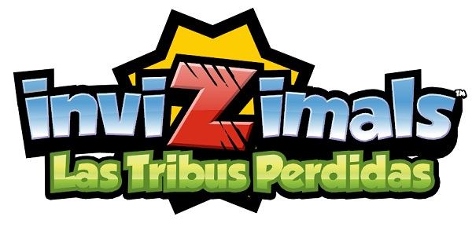
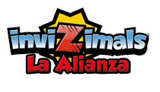
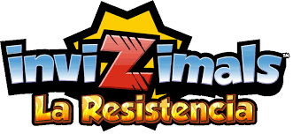

Es el 4º juego de la saga de Invizimals desarrollado por Novarama y el primero para Playstation 3 Explora por primera vez el mundo de los Invizimals en esta emocionante aventura para PS3™. Ponte en la piel de Hiro, un joven explorador que descubre un portal mágico que le transportará al Reino Escondido, una tierra atacada por un cruel y violento ejército de robots. Transfórmate en 16 de los Invizimals más populares, utiliza sus habilidades especiales para derrotar al poderoso ejército enemigo y resuelve divertidos puzles. Conecta con otros jugadores de Invizimals™: La Alianza en PS Vita para intercambiar objetos de juego y participa en electrizantes combates para cuatro jugadores mediante las funciones interplataforma.
La otra dimensión, contigo convertido en el Héroe que trata de encontrar a Keni tras haber desaparecido en la otra dimensión, y si eres nuevo en la franquicia, el juego te permitirá comenzar una nueva aventura con Jasmin, Alex y la pandilla. Esta vez habrá 150 Invizimals, el máximo de criaturas que jamás hemos tenido en un título de Invizimals, con 70 de ellos completamente nuevos y 80 de los Invizimals favoritos de la comunidad de los juegos anteriores para que los captures, entrenes, personalices y luches.
| Invizimals | La otra dimension | Las tribus perdidas |
| El reino escondido | La alianza | La resistencia |